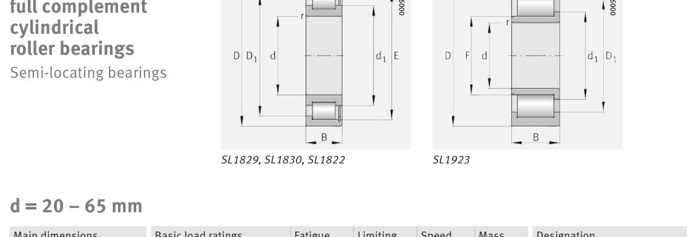

Original catalogue drawing - FAG Schaeffler HR 1, page 514

Scanned from the manufacturer catalogue page listing this part number. All part numbers printed on that table share the same drawing.
Scale cross-section
Blue = inner / outer ring, yellow = rolling element. Drawn to scale from this part's own
dimensions for selection reference only - not a manufacturing or assembly drawing.
Dimension table (mm / inch)
Symbol
Dimension
mm
inch
d
Bore diameter
55
2.1654
D
Outside diameter
100
3.937
B
Inner-ring / bearing width
25
0.9843
r
Chamfer (min)
1.5
0.0591
E
Roller-set outside dia.
88.8
3.4961
Notes
Weights are given in kg. Load ratings are shown in both the original catalogue units and the converted value (1 N = 0.2248 lbf). Data is provided for selection reference only - confirm against the latest official catalogue before ordering.
Main dimensions
Bore d (mm)
55
Outside dia. D (mm)
100
Width B (mm)
25
Inner-ring OD d1 (mm)
70
Inner-ring shoulder dia. D1 (mm)
84.1
Dimension E (mm)
88.8
Dimension s (mm)
1
Load ratings & speeds
Basic dynamic load rating Cr (lbs)
31473
Basic static load rating Cor (lbs)
33272
Basic dynamic load rating Cr (N)
140000
Basic static load rating C0r (N)
148000
Fatigue limit load Cur (N)
25000
Limiting speed nG (rpm)
4,350
Reference speed nB (rpm)
2,700
Weight
Weight (kg)
0.87
Mounting dimensions (fillets / shoulders)
Housing fillet r max (mm)
1.5
Shaft shoulder dc (mm)
70
Housing shoulder Da (mm)
84
Housing fillet ra max (mm)
1.5
Bearing life (ISO 281 basic rating life)
C / P
Equivalent load P (N)
L10 (106 rev)
L10h at 1,400 rpm
4
35,000
102
1,209
6
23,333
392
4,673
8
17,500
1,024
12,190
10
14,000
2,154
25,648
15
9,333
8,323
99,089
Basic rating life per ISO 281: L10 = (C/P)10/3 with C = 140,000 N. Hours = L10 x 106 / (60n). Life-modification factors for lubrication, contamination and temperature (aISO) are not included.
Source & traceability
Brand
FAG
Source catalogue
FAG / Schaeffler Rolling Bearings HR 1
Catalogue page
p.514 (dimensions)
Load ratings in newtons, fatigue limit load Cur, limiting speed nG and reference speed nB.
Send us the quantity you need and we will come back with price and
lead time, normally within 24 hours. Equivalent parts from other brands can be quoted at the same time.